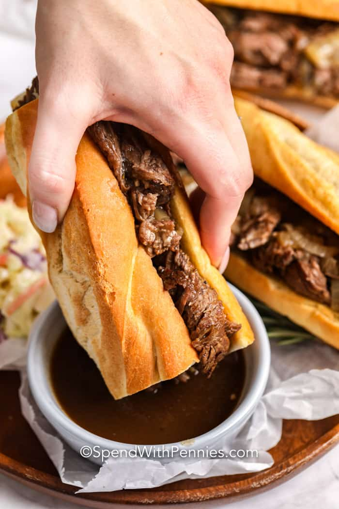

French Dip Sand-O

Succulent braised beef isn't as difficult as it sounds. Stick it between some store bought bread, dip it it the jus, take a bite. Do it.
Ingredients
For the BEEF
- 5 Yellow Onions - Sliced Thin
- 2 TBSP Butter
- Shit ton of Minced Garlic
- 2-10lb Chuck Roast
- Enough Beef/Veal Stock
For the Rest
- Store Bought Hoagie Rolls
- Havarti Cheese
Technique
- Season Chuck Roast with a generous amount of salt (secret ingredient, unlisted).
- Heat nuetral oil in dutch oven large enough to fit roast. Medium high heat. Sear roast on all sides. Set aside.
- Add butter to dutch oven over medium heat. Add onions. Caramelize those jons. Add garlic. Do not burn. Burnt garlic sucks.
- Scrape and fond from dutch oven and return the roast. Add strock.
- Secure lid and place in a 350 degree farenheit oven for four hours or more. Beef should be fork tender.
- Strain and reserve jus and onions seperatly.
- Assemble sandwich with cheese on top. Toast, dip, and enjoy.